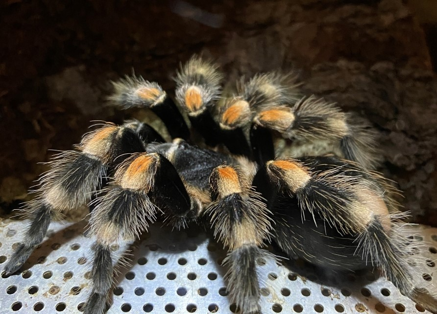

Chov sklípkana Brachypelma hamorii
Popis sklípkana
Jedná se o zemního sklípkana, který se obvykle ukrývá pod spadlými kmeny, nebo v opuštěných norách hlodavců. Po období dešťů (na konci října) dospělí samci opouštějí natrvalo své úkryty a vydávají se hledat samice vhodné k páření. Samice se dožívá až 30 let, samec po dosažení dospělosti žije maximálně 1 rok.Tito sklípkani mohou mít v rozpětí nohou až 16 cm a v těle měřit i 7–8 cm. Zbarvení je černé, na článcích končetin je oranžová, oranžově je také lemovaný karapax. Jako obraný mechanizmus používají chloupky, které vykopávají do ovzduší a je nutné vyvarovat se vdechnutí nebo kontaktu s očima. Jejich jed není člověku nebezpečný. wikipedia

Chov
Tento sklípkan nepatří mezi náročné druhy. Stačí mu pokojová teplota (18°C - 30°C), miska s vodou, jejíž velikost je přiměřená velikosti pavouka a minimálně 5cm substrátu pro dospělého jedince(já používám bio rašelinu s kokosovým vláknem v poměru 1:1). Dále budeme potřebovat nějaký objekt, který poslouží jako úkryt (kus kůry, nebo klidně květináč). Terárium by mělo měřit pro dospělého jedince zhruba 30cm*30cm*25cm ŠHV.
Krmení
Sklípkany smíme krmit velkou škálou hmyzu (červy, cvrčci, šváby, sarančata, housenky...). Mláďata tohoto pavouka krmíme 1-2x týdně potravou, která je menší než pavouk v těle. Dospívající jedince krmíme zhruba 1x týdně živou potravou která není větší než pavouk. Dospělé krmíme 1x za 14 dní přiměřeně velkým hmyzem (larva Potemníka brazilského, saranče, šváb dubia atd...). Když tarantule přestane žrát, znamená to, že už je přežraná, nebo je před svlekem (tato pauza může trvat i několik měsíců). Živou potravu druhý den vyndáme, pokud o ni sklípkan nejeví zájem, kdyby se pavouk svlékl v přítomnosti živé potravy, je velká pravděpodobnost, že by ho mohla potrava zranit nebo zabít. Po svleku bychom měli počkat alespoň týden, než začneme znovu krmit.